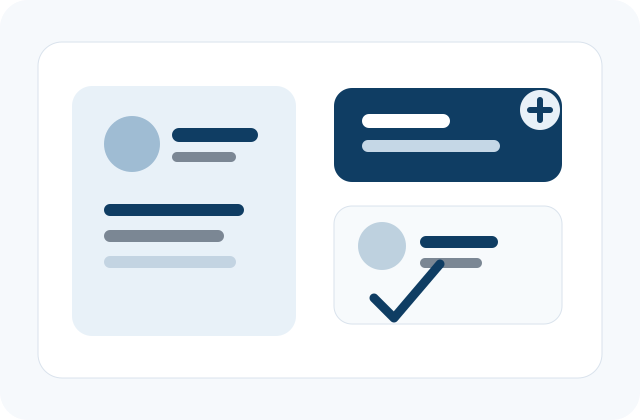

Admin Module
Manage platform activity, approve workflows, oversee consultants, monitor employees, and keep reporting centralized.
- User and role management
- Job and workforce oversight
- Status tracking and reporting
Trusted Talent Advisory
Helping job seekers move forward with confidence
TAJ Consultancy Services supports job seekers, consultants, and employers with clear guidance across job searching, employment updates, and structured hiring workflows. We focus on making every step easier to understand, easier to manage, and more supportive for real people.

About TAJ Consultancy Services

TAJ Consultancy Services, short for Talent Acquisition Journey, was created to make job searching and employment coordination more structured, clear, and effective. We support consultants who guide candidates, and we support businesses that need dependable recruitment and workforce coordination.
Our approach is simple: help people understand the process, keep communication moving, and provide a user-friendly experience at every stage. This creates smoother coordination, clearer accountability, and better visibility for everyone involved.
Learn more about our missionPlatform Modules
Manage platform activity, approve workflows, oversee consultants, monitor employees, and keep reporting centralized.
Help consultants support job seekers, coordinate with clients, manage openings, and keep hiring progress visible.
Give employees a simple place to view assignments, track updates, receive guidance, and stay connected to employment activity.
Why Choose Us
We help candidates and consultants stay aligned through clear next steps, updates, and practical guidance.
We keep applications, client requirements, and employment updates visible so teams can respond faster.
We focus on simple, maintainable workflows that reduce confusion and support consistent communication.
Job Search Flow
Admins and consultants organize requirements, openings, permissions, and workflow visibility.
Consultants guide candidates through job searching, application progress, and communication with clients.
Employees and placed candidates receive updates, view their status, and stay connected after onboarding.
Start the Conversation
Let's discuss how TAJ Consultancy Services can support your consultants, candidates, and employment workflows.